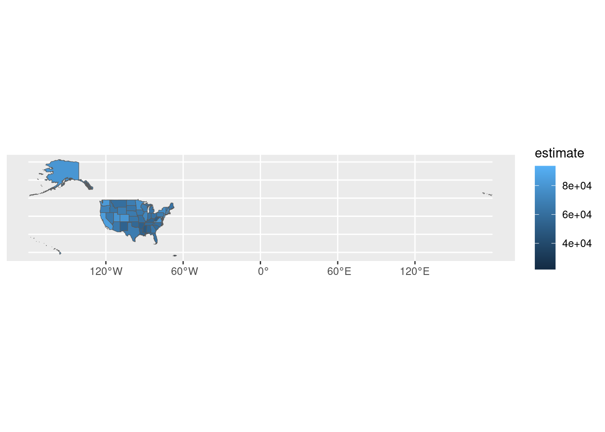
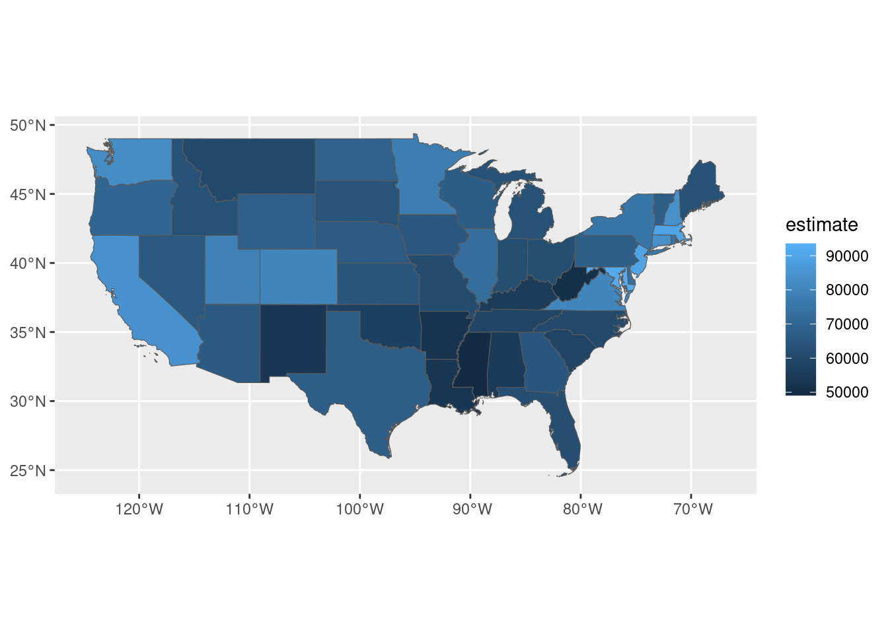
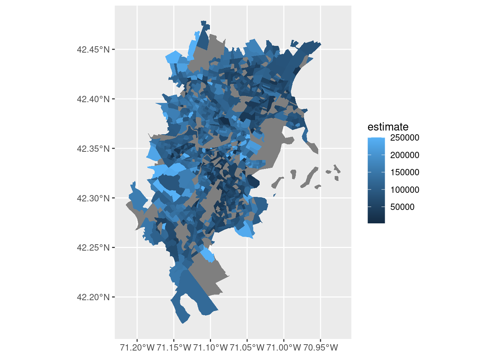
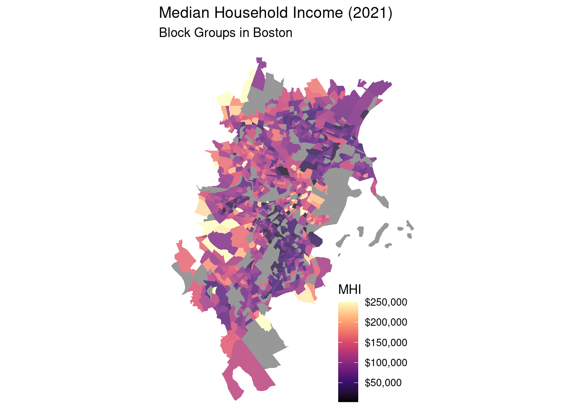
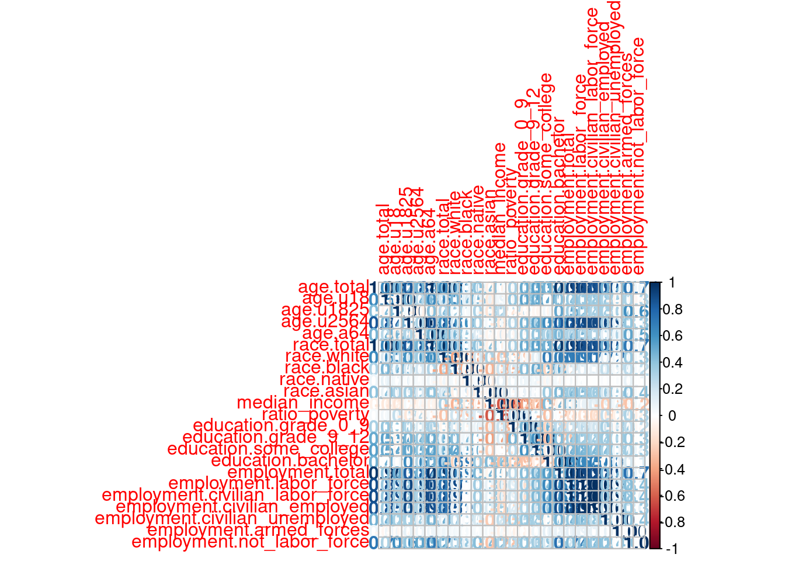
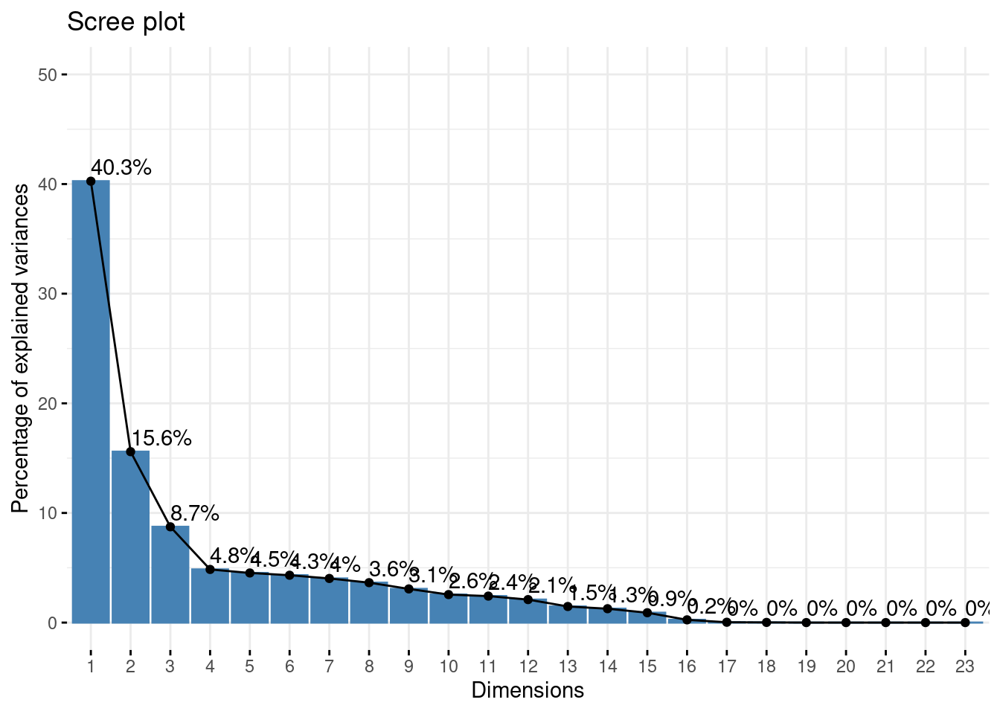
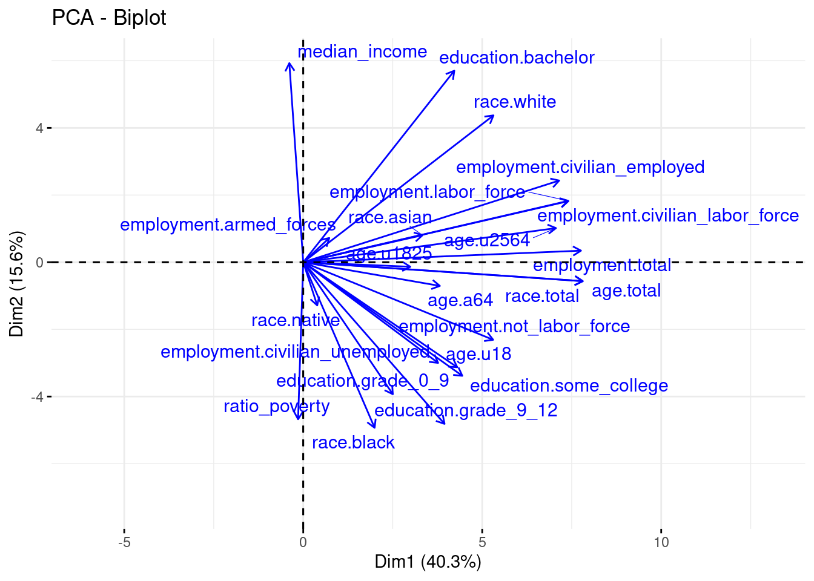
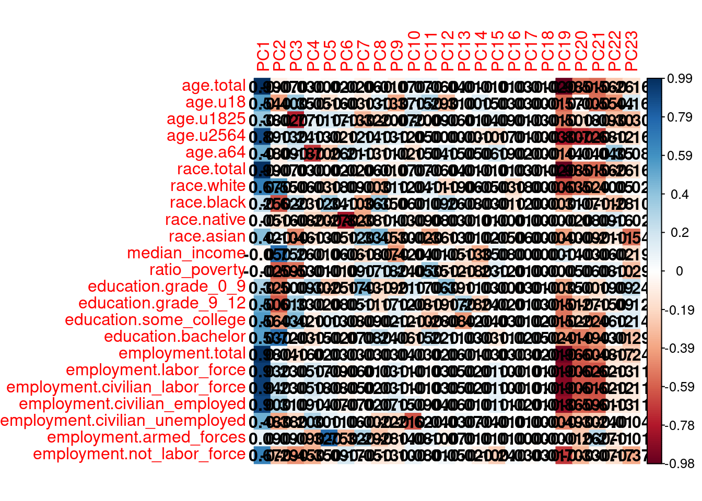

library(tidycensus)
library(tidyverse)
library(tigris)
library(sf)
library(osmdata)
library(leaflet)
library(arrow)
library(corrplot)
library(factoextra)Lab 2-1 - Predicting transit accessibility with census data
Objective
In this practical, we will conduct an analysis of transit accessibility, and use this analysis as a gateway to explore the underlying social characteristics measured by the census.
The aim of this practical is to learn how to:
- Retrieve, process, and analyze census data for different geographies / variables.
- Combine geo-referenced census data with other spatial features (from Open Street Map) for analysis.
- Compute a measure of public transit accessibility and assess how well this measure is predicted by census variables.
- Conduct a social area analysis using dimensionality reduction (PCA) to identify the factors which differentiate census variables.
Before starting:
Ensure you have access to the
stellaserver:Load required packages
Configure the API key in your R environment
Sys.setenv(CENSUS_API_KEY = "YOUR_API_KEY")Then call the
tidycensus::census_api_keyfunction:census_api_key(Sys.getenv("CENSUS_API_KEY"), install = TRUE, overwrite=TRUE)[1] "069a473f42727947c3c98006f89e926d874bc58b"
Loading Census Data With tidycensus
To recap, the tidycensus package gives us a simple way to retrieve census data for a given variable and set of geographic units.
Note: in this practical, we will use data from the American Community Survey (ACS) because of the greater number of variables. To do this, we will use the tidyverse::get_acs function. The decennial census is also available with tidyverse::get_decennial.
Lets start by retrieving median household income in US states. For a list of the different variables available from the ACS, a good place to start is the ACS Variable Explorer. If you know what you are looking for, you can use the search bar to find the variable code(s).
medincome <- get_acs(geography = "state",
variables = "B19013_001",
year = 2021,
progress = FALSE)
head(medincome)# A tibble: 6 × 5
GEOID NAME variable estimate moe
<chr> <chr> <chr> <dbl> <dbl>
1 01 Alabama B19013_001 54943 377
2 02 Alaska B19013_001 80287 1113
3 04 Arizona B19013_001 65913 387
4 05 Arkansas B19013_001 52123 458
5 06 California B19013_001 84097 236
6 08 Colorado B19013_001 80184 450Exercise 1
Try downloading other variables using codes you find with the ACS Variable Explorer. Are cross-tabulations of multiple variables in the same format as univariate tables?
Inspect all of the variables available in the 2021 ACS.
tidycensushas a helpful function for this:load_variables(2021, "acs5", cache = TRUE).The beginning of the variable code indicates the table. What does the suffix
_001in the code block above indicate?
Mapping Census Data
tidycensus integrates with sf to return spatial boundaries for geographic units. We can add spatial boundaries using geometry = TRUE.
medincome <- get_acs(geography = "state",
variables = "B19013_001",
year = 2021,
geometry=TRUE,
progress=FALSE)
ggplot(medincome) +
geom_sf(aes(fill=estimate))
We can simplify the plot by restricting to states in the continental US.
medincome_continental_usa <- medincome %>%
filter(!NAME %in% c("Alaska", "Hawaii", "Guam", "Puerto Rico"))
ggplot(medincome_continental_usa) +
geom_sf(aes(fill=estimate))
Remember the hierarchy of US statistical geographies? You can download data for any of these geographies with tidycensus.

See the list of available geographies here.
We can also filter for some higher-level geographies. Lets get median household income for Census Block Groups in Massachusetts.
medincome_ma <- get_acs(
geography = "cbg",
variables = "B19013_001",
survey = "acs5",
year = 2021,
state = "MA",
geometry = TRUE,
progress = FALSE
)
head(medincome_ma)Simple feature collection with 6 features and 5 fields
Geometry type: MULTIPOLYGON
Dimension: XY
Bounding box: xmin: -73.23035 ymin: 42.02425 xmax: -70.17674 ymax: 42.71779
Geodetic CRS: NAD83
GEOID
1 250092201013
2 250277544002
3 250010101003
4 250039352004
5 250092505002
6 250251604003
NAME variable
1 Block Group 3, Census Tract 2201.01, Essex County, Massachusetts B19013_001
2 Block Group 2, Census Tract 7544, Worcester County, Massachusetts B19013_001
3 Block Group 3, Census Tract 101, Barnstable County, Massachusetts B19013_001
4 Block Group 4, Census Tract 9352, Berkshire County, Massachusetts B19013_001
5 Block Group 2, Census Tract 2505, Essex County, Massachusetts B19013_001
6 Block Group 3, Census Tract 1604, Suffolk County, Massachusetts B19013_001
estimate moe geometry
1 46375 31560 MULTIPOLYGON (((-70.62159 4...
2 105221 46248 MULTIPOLYGON (((-71.88907 4...
3 63333 52688 MULTIPOLYGON (((-70.18885 4...
4 NA NA MULTIPOLYGON (((-73.22953 4...
5 42500 28364 MULTIPOLYGON (((-71.17149 4...
6 112393 34802 MULTIPOLYGON (((-71.04615 4...In this practical, we only want data for Boston, so we will have to filter for CBGs within the boundary of Boston. We can get this boundary from tigris, an R package that provides access to Census geographic boundaries and is closely coupled to tidycensus. See Census geographic data and applications in R for more information.
boston_area_towns <- c("Boston", "Somerville", "Cambridge", "Brookline", "Revere", "Malden", "Everett", "Medford", "Chelsea", "Winthrop Town")
boston_boundary <- places(state = "MA", cb = TRUE, year=2021,progress=FALSE) %>%
filter(NAME %in% boston_area_towns)Exercise 2
- Using what you learned in lab-1-1, check that the Boston boundary is correct by plotting it on an interactive map using
leaflet.
Restricting Census data to our area of interest
Now, using st_filter from the sf package, we can filter for CBGs within Boston.
medincome_boston <- medincome_ma %>%
st_filter(boston_boundary)
head(medincome_boston)Simple feature collection with 6 features and 5 fields
Geometry type: MULTIPOLYGON
Dimension: XY
Bounding box: xmin: -71.11753 ymin: 42.32981 xmax: -71.02934 ymax: 42.40286
Geodetic CRS: NAD83
GEOID
1 250251604003
2 250250106001
3 250250709021
4 250214001001
5 250250811011
6 250251601031
NAME variable
1 Block Group 3, Census Tract 1604, Suffolk County, Massachusetts B19013_001
2 Block Group 1, Census Tract 106, Suffolk County, Massachusetts B19013_001
3 Block Group 1, Census Tract 709.02, Suffolk County, Massachusetts B19013_001
4 Block Group 1, Census Tract 4001, Norfolk County, Massachusetts B19013_001
5 Block Group 1, Census Tract 811.01, Suffolk County, Massachusetts B19013_001
6 Block Group 1, Census Tract 1601.03, Suffolk County, Massachusetts B19013_001
estimate moe geometry
1 112393 34802 MULTIPOLYGON (((-71.04615 4...
2 113875 65734 MULTIPOLYGON (((-71.08182 4...
3 82813 41269 MULTIPOLYGON (((-71.07883 4...
4 56528 27626 MULTIPOLYGON (((-71.11718 4...
5 53988 27818 MULTIPOLYGON (((-71.11302 4...
6 32788 31124 MULTIPOLYGON (((-71.03354 4...We can then make a Choropleth map of the income in CBGs in Boston.
ggplot(medincome_boston) +
geom_sf(aes(fill = estimate), color = NA)
Exercise 3
- What is causing the missing values for some of these areas? Tip: Removing CBGs with
NAvalues and plotting withleafletmay give some indication.
Sidenote: using data visualizations to communicate your findings
Data visualizations are the best tool you have for conveying the results of your analysis. It is well worth spending a bit of effort to (1) think through how to best display your data, (2) take a extra time to polish your visualization, (3) be prepared to make and re-make your visualization as things change. Making a compelling data visualization is often a question of choosing which dimensions in your data that are most important for the message you are trying to convey, then finding a type of plot that can represent them clearly. There is some inspiration for different types of plots in the R Graph Gallery.
Things to keep in mind:
Are your axis labels human readable?
Are you maximizing the data-to-ink ratio?
Does your plot have an appropriate theme? Grid-lines (in default ggplot theme) are often not relevant or need to be reduced.
Have you considered how you are using color? Common mistakes include: colors over-emphasizing minor variations in your data, diverging color scales used for non-diverging data, forgetting accessibility for color blind people.
(Sometimes) Do you have a declarative title conveying the main message of your visualization?
Here is a cleaned up version of the map from above.
ggplot() +
geom_sf(data = medincome_boston, aes(fill = estimate), color = NA, alpha = 0.8) +
scale_fill_viridis_c(option = "magma", direction = 1, name = "MHI", label = function(x){paste0("$", scales::comma(x))}) +
theme_void() +
labs(
title = "Median Household Income (2021)",
subtitle = "Block Groups in Boston"
) +
theme(legend.position = c(0.8, 0.2))
Exercise 4
- List or try to add a few more features to improve this visualization.
Combining census data with OSM
Now, the aim of this practical is to understand the factors which predict public transit accessibility in Boston.
We will follow this methodology:
- Download a range of ACS variables.
- Download Public Transit Stops in Boston from Open Street Map.
- Compute the “accessibility” of transit stations from CBGs.
- Explore which census variables predict transit station accessibility.
Retrieving ACS Variables
Now, lets retrieve a few more variables from the ACS. Because combining ACS variables can be complicated (for example, we might want broad age categories, not one year bands), we have pre-processed a few key variables into an easier-to-use format. You can find this in the file /data/CUS/labs/2/14460_acs_2021_filtered_boston.parquet.
census <- read_parquet("/data/CUS/labs/2/14460_acs_2021_filtered_boston.parquet")
colnames(census) [1] "GEOID" "age.total"
[3] "age.u18" "age.u1825"
[5] "age.u2564" "age.a64"
[7] "race.total" "race.white"
[9] "race.black" "race.native"
[11] "race.asian" "median_income"
[13] "ratio_poverty" "education.grade_0_9"
[15] "education.grade_9_12" "education.some_college"
[17] "education.bachelor" "employment.total"
[19] "employment.labor_force" "employment.civilian_labor_force"
[21] "employment.civilian_employed" "employment.civilian_unemployed"
[23] "employment.armed_forces" "employment.not_labor_force" Exercise 5
- Take a moment to re-construct one of the variables (like
age.u1825) in this data frame usingtidycensusand the ACS Variable Explorer. How many variables do you need to combine?
Because this pre-processed census data doesn’t have any associated geography, we need to download and attach geographies using the tigris package.
block_groups <- block_groups(state = "25", year = 2021, class = "sf",progress=FALSE)
census <- census %>%
left_join(block_groups %>% select(GEOID, geometry), by = c("GEOID")) %>%
st_as_sf()
censusSimple feature collection with 1086 features and 24 fields
Geometry type: MULTIPOLYGON
Dimension: XY
Bounding box: xmin: -71.21578 ymin: 42.17279 xmax: -70.9201 ymax: 42.47898
Geodetic CRS: NAD83
# A tibble: 1,086 × 25
GEOID age.total age.u18 age.u1825 age.u2564 age.a64 race.total race.white
<chr> <dbl> <dbl> <dbl> <dbl> <dbl> <dbl> <dbl>
1 25009207… 1102 386 91 570 55 1102 382
2 25009208… 1866 284 220 1074 288 1866 1223
3 25009208… 391 27 47 238 79 391 353
4 25009208… 1209 301 46 689 173 1209 998
5 25009208… 942 217 128 474 123 942 795
6 25009208… 1344 382 92 695 175 1344 1177
7 25017336… 1898 508 213 911 266 1898 1885
8 25017336… 1509 428 122 840 119 1509 1181
9 25017336… 888 191 101 513 83 888 594
10 25017336… 2320 201 98 1490 531 2320 1589
# ℹ 1,076 more rows
# ℹ 17 more variables: race.black <dbl>, race.native <dbl>, race.asian <dbl>,
# median_income <dbl>, ratio_poverty <dbl>, education.grade_0_9 <dbl>,
# education.grade_9_12 <dbl>, education.some_college <dbl>,
# education.bachelor <dbl>, employment.total <dbl>,
# employment.labor_force <dbl>, employment.civilian_labor_force <dbl>,
# employment.civilian_employed <dbl>, employment.civilian_unemployed <dbl>, …Retrieving OSM data
Now that we have some nicely formatted census data, we can move on to downloading our transit stations from OSM.
We have already loaded ACS data for CBGs in Boston. Now we need to retrieve public transit stations from OSM. We can do this using the osmdata R package (as we did in last week’s practical).
boston_bb <- getbb("Boston, Massachusetts")
public_transit_pts <- opq(bbox = boston_bb) %>%
add_osm_feature(key = "public_transport", value = "station") %>%
osmdata_sf()
public_transit_pts <- public_transit_pts$osm_points
head(public_transit_pts)Simple feature collection with 6 features and 106 fields
Geometry type: POINT
Dimension: XY
Bounding box: xmin: -71.13438 ymin: 42.33002 xmax: -71.05716 ymax: 42.37337
Geodetic CRS: WGS 84
osm_id name access addr:city addr:city_parent addr:country
69479726 69479726 Griggs Street <NA> <NA> <NA> <NA>
69480627 69480627 Harvard <NA> <NA> <NA> <NA>
69481020 69481020 Summit Avenue <NA> <NA> <NA> <NA>
69481065 69481065 Andrew <NA> <NA> <NA> <NA>
69481493 69481493 Riverway <NA> <NA> <NA> <NA>
69481663 69481663 Kent Street <NA> <NA> <NA> <NA>
addr:county addr:housenumber addr:neighbourhood addr:postcode
69479726 <NA> <NA> <NA> <NA>
69480627 <NA> <NA> <NA> <NA>
69481020 <NA> <NA> <NA> <NA>
69481065 <NA> <NA> <NA> <NA>
69481493 <NA> <NA> <NA> <NA>
69481663 <NA> <NA> <NA> <NA>
addr:state addr:street addr:street_1 addr:unit air_conditioning
69479726 <NA> <NA> <NA> <NA> <NA>
69480627 <NA> <NA> <NA> <NA> <NA>
69481020 <NA> <NA> <NA> <NA> <NA>
69481065 <NA> <NA> <NA> <NA> <NA>
69481493 <NA> <NA> <NA> <NA> <NA>
69481663 <NA> <NA> <NA> <NA> <NA>
alt_name amenity architect attribution automatic_door baby_feeding
69479726 <NA> <NA> <NA> <NA> <NA> <NA>
69480627 <NA> <NA> <NA> <NA> <NA> <NA>
69481020 <NA> <NA> <NA> <NA> <NA> <NA>
69481065 <NA> <NA> <NA> <NA> <NA> <NA>
69481493 <NA> <NA> <NA> <NA> <NA> <NA>
69481663 <NA> <NA> <NA> <NA> <NA> <NA>
bicycle bicycle_parking blind boat bus check_date
69479726 <NA> <NA> <NA> <NA> <NA> <NA>
69480627 <NA> <NA> <NA> <NA> <NA> <NA>
69481020 <NA> <NA> <NA> <NA> <NA> <NA>
69481065 <NA> <NA> <NA> <NA> <NA> <NA>
69481493 <NA> <NA> <NA> <NA> <NA> <NA>
69481663 <NA> <NA> <NA> <NA> <NA> <NA>
check_date:wheelchair colour contact:phone contact:twitter
69479726 <NA> <NA> <NA> <NA>
69480627 <NA> <NA> <NA> <NA>
69481020 <NA> <NA> <NA> <NA>
69481065 <NA> <NA> <NA> <NA>
69481493 <NA> <NA> <NA> <NA>
69481663 <NA> <NA> <NA> <NA>
contact:website covered departures_board dog door ele elevator email
69479726 <NA> <NA> <NA> <NA> <NA> <NA> <NA> <NA>
69480627 <NA> <NA> <NA> <NA> <NA> <NA> <NA> <NA>
69481020 <NA> <NA> <NA> <NA> <NA> <NA> <NA> <NA>
69481065 <NA> <NA> <NA> <NA> <NA> <NA> <NA> <NA>
69481493 <NA> <NA> <NA> <NA> <NA> <NA> <NA> <NA>
69481663 <NA> <NA> <NA> <NA> <NA> <NA> <NA> <NA>
emergency_telephone_code entrance exit fare_zone fee ferry foot
69479726 <NA> <NA> <NA> <NA> <NA> <NA> <NA>
69480627 <NA> <NA> <NA> <NA> <NA> <NA> <NA>
69481020 <NA> <NA> <NA> <NA> <NA> <NA> <NA>
69481065 <NA> <NA> <NA> <NA> <NA> <NA> <NA>
69481493 <NA> <NA> <NA> <NA> <NA> <NA> <NA>
69481663 <NA> <NA> <NA> <NA> <NA> <NA> <NA>
gnis:feature_id gtfs:stop_id heritage:website highway historic iata
69479726 <NA> <NA> <NA> <NA> <NA> <NA>
69480627 <NA> <NA> <NA> <NA> <NA> <NA>
69481020 <NA> <NA> <NA> <NA> <NA> <NA>
69481065 <NA> <NA> <NA> <NA> <NA> <NA>
69481493 <NA> <NA> <NA> <NA> <NA> <NA>
69481663 <NA> <NA> <NA> <NA> <NA> <NA>
indoor internet internet_access layer level light_rail line lit
69479726 <NA> <NA> <NA> <NA> <NA> yes <NA> <NA>
69480627 <NA> <NA> <NA> <NA> <NA> <NA> <NA> <NA>
69481020 <NA> <NA> <NA> <NA> <NA> yes <NA> <NA>
69481065 <NA> <NA> <NA> <NA> <NA> <NA> <NA> <NA>
69481493 <NA> <NA> <NA> <NA> <NA> yes <NA> <NA>
69481663 <NA> <NA> <NA> <NA> <NA> yes <NA> <NA>
location massgis:geom_id material motor_vehicle network network:guid
69479726 <NA> <NA> <NA> <NA> MBTA <NA>
69480627 <NA> <NA> <NA> <NA> MBTA US-MA-MBTA
69481020 <NA> <NA> <NA> <NA> MBTA <NA>
69481065 <NA> <NA> <NA> <NA> MBTA <NA>
69481493 <NA> <NA> <NA> <NA> MBTA <NA>
69481663 <NA> <NA> <NA> <NA> MBTA <NA>
network:short network:wikidata
69479726 <NA> <NA>
69480627 MBTA Q171985
69481020 <NA> <NA>
69481065 <NA> Q171985
69481493 <NA> <NA>
69481663 <NA> <NA>
network:wikipedia old_name oneway
69479726 <NA> <NA> <NA>
69480627 en:Massachusetts Bay Transportation Authority <NA> <NA>
69481020 <NA> <NA> <NA>
69481065 <NA> <NA> <NA>
69481493 <NA> <NA> <NA>
69481663 <NA> <NA> <NA>
opening_hours operator operator:short operator:type operator:wikidata
69479726 <NA> MBTA <NA> <NA> <NA>
69480627 <NA> MBTA <NA> <NA> Q171985
69481020 <NA> MBTA <NA> <NA> <NA>
69481065 <NA> MBTA <NA> <NA> <NA>
69481493 <NA> MBTA <NA> <NA> <NA>
69481663 <NA> MBTA <NA> <NA> <NA>
parking phone phone:elevator platforms public_transport railway
69479726 <NA> <NA> <NA> <NA> station halt
69480627 <NA> <NA> <NA> <NA> station station
69481020 <NA> <NA> <NA> <NA> station halt
69481065 <NA> <NA> <NA> <NA> station station
69481493 <NA> <NA> <NA> <NA> station halt
69481663 <NA> <NA> <NA> <NA> station halt
railway:position railway:ref ref shelter smoking source start_date
69479726 <NA> <NA> <NA> <NA> <NA> <NA> <NA>
69480627 <NA> <NA> <NA> <NA> <NA> <NA> <NA>
69481020 <NA> <NA> <NA> <NA> <NA> <NA> <NA>
69481065 <NA> <NA> <NA> <NA> <NA> <NA> <NA>
69481493 <NA> <NA> <NA> <NA> <NA> <NA> <NA>
69481663 <NA> <NA> <NA> <NA> <NA> <NA> <NA>
station stroller subway supervised surface toilets:wheelchair
69479726 light_rail <NA> <NA> <NA> <NA> <NA>
69480627 subway <NA> yes <NA> <NA> <NA>
69481020 light_rail <NA> <NA> <NA> <NA> <NA>
69481065 subway <NA> yes <NA> <NA> <NA>
69481493 light_rail <NA> <NA> <NA> <NA> <NA>
69481663 light_rail <NA> <NA> <NA> <NA> <NA>
tracks train tunnel
69479726 <NA> <NA> <NA>
69480627 <NA> yes <NA>
69481020 <NA> <NA> <NA>
69481065 <NA> yes <NA>
69481493 <NA> <NA> <NA>
69481663 <NA> <NA> <NA>
url
69479726 <NA>
69480627 http://www.mbta.com/schedules_and_maps/subway/lines/stations/?stopId=12084
69481020 <NA>
69481065 <NA>
69481493 <NA>
69481663 <NA>
website wheelchair wheelchair:description wifi wikidata
69479726 <NA> <NA> <NA> <NA> Q5608979
69480627 <NA> yes <NA> <NA> Q5264971
69481020 <NA> <NA> <NA> <NA> <NA>
69481065 <NA> yes <NA> <NA> Q4756160
69481493 <NA> <NA> <NA> <NA> Q7338796
69481663 <NA> no <NA> <NA> Q6391931
wikimedia_commons wikipedia geometry
69479726 <NA> <NA> POINT (-71.13438 42.34885)
69480627 <NA> <NA> POINT (-71.11894 42.37337)
69481020 <NA> <NA> POINT (-71.12577 42.34104)
69481065 <NA> <NA> POINT (-71.05716 42.33002)
69481493 <NA> <NA> POINT (-71.11193 42.33162)
69481663 <NA> <NA> POINT (-71.11435 42.34401)Lets display the data in an interactive map that will let us check that we have downloaded the correct features.
leaflet(public_transit_pts) %>%
addProviderTiles(provider=providers$CartoDB.Positron) %>%
addCircleMarkers(
label = ~name,
radius = 3,
stroke = FALSE,
fillOpacity = 0.8,
color = "blue"
)It looks like this data has some duplicated stations, and isn’t restricted to T-stops. This is a common problem in OSM data, which is crowd-sourced from volunteers.
Let’s see if we can filter the data to select only T stops. First, we can check the unique values in the station column.
public_transit_pts %>% pull(station) %>% unique()[1] "light_rail" "subway" NA "yes" Then, lets filter for “subway” and “light_rail” stations.
t_stops <- public_transit_pts %>%
filter(station %in% c("subway", "light_rail"))
leaflet(t_stops) %>%
addProviderTiles(provider=providers$CartoDB.Positron) %>%
addCircleMarkers(
label = ~name,
radius = 3,
stroke = FALSE,
fillOpacity = 0.8,
color = "blue"
)This looks pretty good!
Exercise 6
Take a moment to explore OSM data. What other features are accessible? Can you find features for other forms of public transit? Can you identify any limitations cause by the crowd-sourced nature of the data?
- For a list of all of the features available from Open Street Map, see here.
Measuring transit accessibility
Now that we have data on census variables in geographic areas and the location of public transit stations, we can move on to calculating a measure of public transit accessibility.
Our measure will be based on the assumption of proximity-based accessibility and residential anchoring. This means that the proximity of an individual’s home to a transit station (in terms of geometric distance) is indicative of higher / lower public transit accessibility.
Exercise 7
Take a moment to consider the assumptions underlying the ideas of proximity-based accessibility and residential anchoring. Could large-scale behavioral data shed more light on people’s true patterns of behavior in the city?
Why do you think that these ideas have been widely adopted in traditional urban studies (in transit accessibility studies like this one, as well as concepts such as urban food deserts)?
What other types of accessibility might better represent people’s actual ability to use public transportation?
Computing a measure of transit accessibility
In order to compute our accessibility measure, we can use the st_distance function to calculate the distance from each Block Group to the nearest transit station.
To make sure our distance calculation is accurate, we need to transform our data into a projected coordinate system (which preserves distance). Because our study area is focused on Boston, we can use the NAD83 / Massachusetts Mainland projection (EPSG:26986).
Sidenote: Understanding Projected Coordinate Systems
Geographic coordinate systems like WGS84 (EPSG:4326), commonly used in latitude/longitude data represent locations on the Earth’s surface using angular measurements. While suitable for global mapping, they aren’t ideal for precise distance or area calculations because the Earth is curved.
Projected coordinate systems, such as the one we’re using, transform geographic data onto a flat surface. This preserves specific properties, such as distance or area, making it more accurate for spatial operations like buffering or intersection analysis within a localized region.
By re-projecting our data to a system measured in meters, we ensure more accurate distance calculations between census block groups and transit stations.
t_stops <- t_stops %>% st_transform(26986)
census <- census %>% st_transform(26986)Now we can compute the distance from each CBG to the nearest transit station.
distances <- st_distance(census, t_stops)
census$nearest_t_stop_dist <- apply(distances, 1, min)
census %>% select(GEOID, nearest_t_stop_dist)Simple feature collection with 1086 features and 2 fields
Geometry type: MULTIPOLYGON
Dimension: XY
Bounding box: xmin: 223439 ymin: 880324.7 xmax: 247797.2 ymax: 914345.2
Projected CRS: NAD83 / Massachusetts Mainland
# A tibble: 1,086 × 3
GEOID nearest_t_stop_dist geometry
<chr> <dbl> <MULTIPOLYGON [m]>
1 250092072001 6411. (((242868.3 911299, 242875.1 911306.7, 2428…
2 250092081012 6055. (((239792.5 911639, 239812 911636.9, 239841…
3 250092081021 4483. (((241361.6 909071.3, 241374.5 909094.1, 24…
4 250092081022 5707. (((240046.3 910469.8, 240050.5 910477, 2400…
5 250092081024 4505. (((240120.3 910027.7, 240123.6 910028.7, 24…
6 250092082004 6251. (((238867.6 910801.2, 238873.5 910823.3, 23…
7 250173363003 5923. (((236574.5 911371.9, 236634.7 911377.2, 23…
8 250173363006 6466. (((236827 911854.3, 236978.5 911887.3, 2370…
9 250173364031 5152. (((234339 910108.2, 234351.6 910215.9, 2343…
10 250173364032 5281. (((235200.4 910398.9, 235203.4 910435.1, 23…
# ℹ 1,076 more rowsTip: if you don’t understand an expression like this (or any of the more complicated expressions that have come before), please take a moment to break the code down piece-by-piece. For example, try inspecting the distances variable, or running only the expression apply(distances, 1, min) in the R console.
Exercise 8
- Make a map (static or interactive) of the
nearest_t_stop_distdistance variable. - Add the
t_stopsto this map, overlaid on top of the census block groups.
Predicting transit accessibility
Now we have a measure of public transit accessibility for census block groups in Boston. This means that we can ask the question: what census variables predict the accessibility of transit stations?
We can start with a simple approach: a linear regression of our accessibility measure ~ block group characteristics.
The first step is to compose a formula for this regression. To do this efficiently, I’m using the as.formula function from base R. Again, if you are new to R, take a moment to break down this expression piece-by-piece to understand how each component works. Basically, I want to have my nearest_t_stop_dist on the LHS of the equation, and all other variables (except geometry and GEOID on the RHS.
predictors <- setdiff(names(census %>% select(-GEOID) %>% st_drop_geometry()), "nearest_t_stop_dist")
lm_formula <- as.formula(paste("nearest_t_stop_dist ~", paste(predictors, collapse = " + ")))
print(lm_formula)nearest_t_stop_dist ~ age.total + age.u18 + age.u1825 + age.u2564 +
age.a64 + race.total + race.white + race.black + race.native +
race.asian + median_income + ratio_poverty + education.grade_0_9 +
education.grade_9_12 + education.some_college + education.bachelor +
employment.total + employment.labor_force + employment.civilian_labor_force +
employment.civilian_employed + employment.civilian_unemployed +
employment.armed_forces + employment.not_labor_forceNow that we have the formula for our regression, we can create our model and inspect the results.
model <- lm(lm_formula, data = census %>% select(-GEOID) %>% st_drop_geometry())
summary(model)
Call:
lm(formula = lm_formula, data = census %>% select(-GEOID) %>%
st_drop_geometry())
Residuals:
Min 1Q Median 3Q Max
-2839.5 -786.0 -215.2 573.2 4426.2
Coefficients: (5 not defined because of singularities)
Estimate Std. Error t value Pr(>|t|)
(Intercept) 1.679e+03 1.903e+02 8.826 < 2e-16 ***
age.total -2.934e+00 1.977e+00 -1.484 0.13818
age.u18 4.452e+00 1.898e+00 2.346 0.01921 *
age.u1825 1.148e+00 1.202e+00 0.955 0.33976
age.u2564 -8.540e-01 5.259e-01 -1.624 0.10478
age.a64 NA NA NA NA
race.total NA NA NA NA
race.white 1.315e+00 2.961e-01 4.441 1.01e-05 ***
race.black -1.398e-01 3.000e-01 -0.466 0.64142
race.native -1.366e+00 3.281e+00 -0.416 0.67717
race.asian 1.733e+00 3.270e-01 5.301 1.45e-07 ***
median_income -3.743e-04 1.169e-03 -0.320 0.74898
ratio_poverty -2.237e+03 4.104e+02 -5.451 6.46e-08 ***
education.grade_0_9 -8.983e-01 1.500e+00 -0.599 0.54945
education.grade_9_12 3.440e+00 1.248e+00 2.756 0.00596 **
education.some_college 5.294e+00 1.243e+00 4.260 2.26e-05 ***
education.bachelor 6.459e-01 1.155e+00 0.559 0.57613
employment.total 5.577e-01 1.556e+00 0.358 0.72016
employment.labor_force -3.015e+00 7.214e+00 -0.418 0.67612
employment.civilian_labor_force 2.336e+00 7.258e+00 0.322 0.74762
employment.civilian_employed 1.948e-01 8.757e-01 0.222 0.82403
employment.civilian_unemployed NA NA NA NA
employment.armed_forces NA NA NA NA
employment.not_labor_force NA NA NA NA
---
Signif. codes: 0 '***' 0.001 '**' 0.01 '*' 0.05 '.' 0.1 ' ' 1
Residual standard error: 1204 on 910 degrees of freedom
(157 observations deleted due to missingness)
Multiple R-squared: 0.3205, Adjusted R-squared: 0.3071
F-statistic: 23.84 on 18 and 910 DF, p-value: < 2.2e-16Exercise 9
Try to interpret these model results.
Which variables are positively associated with
nearest_t_stop_dist?Which variables are negatively associated?
Why are some estimates
NA?What does this indicate about the quantity of information contained in certain census variables?
How many variables have any statistical significance? Which are they?
What is the overall power of census variables to predict
nearest_t_stop_dist?
Multicollinearity of census variables
Our regression results raise a number of interesting questions: why is the overall predictability of nearest_t_stop_dist relatively low? Are all variables contributing unique information to our regression model? The answer seems to be no (because of the presence of NA coefficient estimates in our model).
To understand how differentiated our census variables are from one another, we can create a cross-correlation plot using the corrplot function. This shows the correlation coefficient of each census variable against all others. A few variables contain missing values which we will drop for convenience.
corrplot(cor(census %>% select(-GEOID, -nearest_t_stop_dist) %>% st_drop_geometry() %>% drop_na()), method="number")
Exercise 10
Interpret the results of
corrplotabove. What variables seem to be providing unique information? What groups of variables seem to be correlated with one another?Explore the
corrplotpackage. How else could we assess multicollinearity in our variables?
Dimensionality reduction of census variables
Using the same census variables as we did in our analysis of transit accessibility, we can perform a Social Area Analysis and see whether our results align with the existing literature.
Sidenote: R has a number of packages that make it very easy to create complex visualizations. One of them is factoextra which is great for visualizing the results of Principal Component and Clustering analyses.
First, lets run a PCA on our census variables. Note that I am removing the GEOID, nearest_t_stop_dist, and geometry columns because we are only interested in the census variables. Again, a few variables contain missing values which we will drop for convenience.
pca <- prcomp(census %>% select(-GEOID, -nearest_t_stop_dist) %>% st_drop_geometry() %>% drop_na(), scale. = TRUE)Now we can plot the amount of variation in the original dataset captured by each principal component.
fviz_eig(pca, addlabels = TRUE, ylim = c(0, 50), ncp=Inf)
It looks like three principal components explain ~64% of variation in our census variables. This is a major dimensionality reduction. Moreover, the first component is by far the most important for explaining differences between census block groups. Now we can dig in further to try to understand what these components are capturing in the census data.
Now lets look at the Biplot, which shows the relationship between our original variables and the first two principal components we have identified.
fviz_pca_biplot(pca, repel = TRUE, col.var = "blue", col.ind = NA)
Exercise 11
Variables pointing in the same direction indicate correlated variables. What variables seem to be correlated with one another?
What variables seem to be driving the top three most important principal components? Hint: these variables will be groups of longer vectors (arrows) pointing in similar directions.
A final way we can analyze our PCA results is to look at the correlation between our original variables and the principal components. This can indicate which variables are playing a role in defining different components.
cor_matrix <- cor(census %>% select(-GEOID, -nearest_t_stop_dist) %>% st_drop_geometry() %>% drop_na(), pca$x)
corrplot(cor_matrix, method = "color", is.corr = FALSE, addCoef.col = "black")
Exercise 12
What variables are correlated (positively or negatively) with the first three principal components?
If the first three principal components have identified the principle axes of differentiation in our census data, how do these results compare to the table based on existing literature above?
Exercise 13
- Using leaflet, make three different maps of
PC1,PC2, andPC3. Which of these principal components show a spatial pattern? Do any of them not show a spatial pattern?
Exercise 14
In today’s lecture, we discussed the importance of considering the spatial units which define your analysis, and the challenge of the Modifiable Areal Unit Problem, where results can be sensitive to the choice of spatial aggregation. Re-conduct this analysis using higher-level statistical geographies (either Census Tract or County).
Do the associations between transit accessibility and different demographic variables remain the same?
Does the dimensionality reduction identify similar social factors differentiating areas?
Closing thoughts
This practical is intended to show you some of the strengths and limitations of census data for understanding urban phenomena. Although census data are a valuable source of big data in cities, they capture only a limited subset of human behavior. Take a moment to consider how large-scale behavioral data could shed more light on urban dynamics, and how this data can complement the census.
The finding that a majority of variation in census variables can be captured by a small number of components (3) is another important takeaway. Consider the reasons for the high level of multicollinearity in census variables, and what processes (social, behavioral, environmental, historical) might contribute to this pattern.